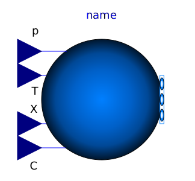

Package Sources contains generic sources for fluid connectors to define fixed or prescribed ambient conditions.
| Name | Description |
|---|---|
| Boundary source component | |
|  Boundary_pT | Boundary with prescribed pressure, temperature, composition and trace substances |
| Boundary with prescribed pressure, specific enthalpy, composition and trace substances | |
| Ideal flow source that produces a prescribed mass flow with prescribed temperature, mass fraction and trace substances | |
| Ideal flow source that produces a prescribed mass flow with prescribed specific enthalpy, mass fraction and trace substances | |
| Base classes used in the Sources package (only of interest to build new component models) |